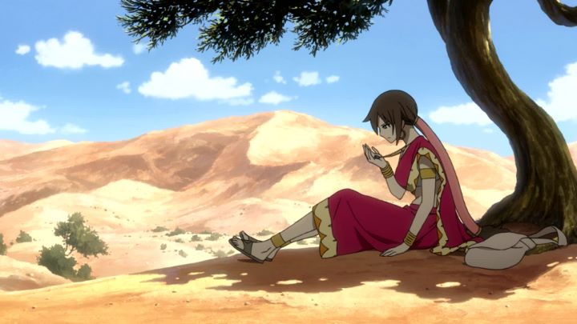

There's a lot of long-running anime franchises to choose from, but I usually avoid them, unable or unwilling to watch 100+ episodes of a series that doesn't have a real story or ending to work towards. But they aren't completely pointless: fun engaging characters make them popular for a reason. That's where theatrical movies come in handy. If done well, they can offer the best of a series in a condensed, standalone format, sometimes using an increased budget to its advantage. I've only seen a handful of episodes for "Fairy Tail," an anime that's run for over a decade. At the time of this writing, there's been two feature films for it. I've seen the second: "Dragon Cry," an anticipated film that ultimately disappointed, despite still being reasonably fun, thanks to the main cast. Not learning my lesson, I came around later to watch "Phoenix Priestess," the first film. It's a shame I didn't start with this! "Fairy Tail - Phoenix Priestess" is an improvement in just about every way, both over "Dragon Cry" and even the original series. If there is a fault with "Phoenix Priestess," it's that it is decidedly less ambitious, following the tried-and-true pattern of standalone shonen films. The main character, new to this movie, is Eclair, a wandering nomad with a giant yellow bird named Momon ("Fairy Tail," like many shonen anime, has some unusual character designs; in this case, it's usually cute flying cats). Eclair is fiercely independent, and distrusts wizards and magic, walking towards her goal... which is difficult, as her memories are foggy. The only clue she has is a broken stone attached to her necklace. When the Fairy Tail guild, led by Natsu and Lucy, come across her fainted in the road, they take her in and insist in helping out. Meanwhile, a small kingdom knows the truth behind the "Phoenix stone," and are on the hunt to steal Eclair's half.The movie could take place at almost any time during the series (although I'm certain fans will be quick to correct me), and doesn't have any real affect on the characters outside the 90 minutes of this film. The movie really isn't about the standard characters, mostly focusing on newcomer Eclair, and in part, Lucy. For many reasons, this is for the best. Natsu and the gang are diverse and fun, but mostly simple and one-dimensional. By comparison, Eclair is far more interesting as the lead, despite her amnesia-trope. Her strength makes her a captivating character, compared to most treatments of female leads in anime, and she gets a good character arc with a satisfying end. By comparison, the antagonist(s) of "Phoenix Priestess" are a bit weaker, only serving to cause tension and excuse for fight scenes, but their weakness allows more focus on Eclair, which isn't entirely a bad thing. The direction of "Phoenix Priestess" overall is well done. There are even a handful of unique touches: there are multiple moments when there is no dialogue (the opening scene has this, which might make you think the soundtrack was broken, but it's intentional), allowing the viewer to focus visually on what happens. These types of decisions aren't always a good idea, but make the movie feel distinct from simply being a workman-like cash grab of a franchise.  Similarly, I'm conviced a different animation director was involved here: compared to the series (and even against "Dragon Cry"), the animation is, dare I say, actually good! This is most apparent during not one or two, but several present action scenes, well choreographed and fluid. There's enough sexual fanservice to satisfy fans without being too distracting (again, looking at you, "Dragon Cry"). Most of the stranger desgin choices of the series are muted for this movie too, so character designs don't look too distracting. Eclair's design in particular looks great. Leaning into the strengths of their color and facial designs, the movie looks more in line with "Code Geass" than "Fairy Tail," but the feel of the movie is ultimately only a subtle change from the series, so fans used to characters looking a certain way should still be satisfied. Basically, "Phoenix Priestess" is the best "Fairy Tail" has ever looked. That's not high praise, but even so, things look good. Surprisingly, the music (complete with a new opening theme to feel like the series) and acting was simply fine, but not great. One would hope the Scottish / Arabian fusion style of the series would be taken advantage of, but the music isn't particularly distinctive, the best tracks being repeats from the show. Fans will want to know that a 10-minute prologue is included in Funimation's Bluray release (subtitled-only, unfortunately), which seems important enough to understanding Eclair and Momon's relationship that it should have been part of the movie. Some basic understanding of what the "Fairy Tail" guild is would help in enjoying the movie, and most of the guild's characters get a short time to shine, but otherwise you don't need detailed knowledge of the franchise story to enjoy this movie.Every successful shonen anime will have a handful of films to go along with it, and it still surprises me that at least one movie per franchise is usually pretty good. For "Fairy Tail," "Fairy Tail - Phoenix Priestess" is that movie. For both longtime fans and relative newcomers, it provides a fun self-contained adventure, acting like a really-good act from the series, but with notably improved animation and design, and a strong new character. If other arcs from the show are this good, with climatic battles having the same animation quality... I might be willing to catch up on the television series. That's the best praise a shonen-summer film can get.
- "Ani" More reviews can be found at : https://2danicritic.github.io/ Previous review: review_Fairy_Tail_-_Dragon_Cry Next review: review_Fantasia